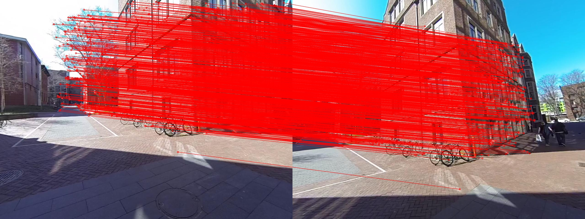
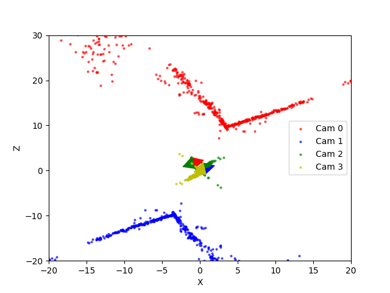
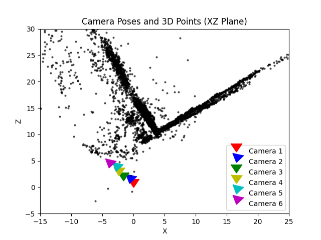

Abstract
This project focuses on reconstructing a 3D model of a scene using Structure from Motion (SfM) techniques applied to a set of 2D images captured from varying perspectives. The dataset includes six images of a street scene containing a building, a text file describing 2D image point correspondences across all image pairs, and the camera's calibration matrix. The methodology demonstrates the power of SfM in creating spatially accurate 3D reconstructions from photographic data.
Introduction
The objective was to reconstruct a 3D model using multiple 2D images captured from different perspectives. The provided dataset included images of a street scene, point correspondences, and a camera calibration matrix. This project showcases the application of computer vision techniques to achieve accurate 3D reconstructions.
Methodology
1. Feature Matching and Outlier Rejection
Feature correspondences were refined using RANSAC, which eliminated outliers and improved robustness.
2. Estimation of Fundamental and Essential Matrices
These matrices encapsulate geometric relationships between corresponding points in image pairs and were computed using the normalized 8-point algorithm and SVD.
3. Camera Pose Estimation
Using the essential matrix, the relative rotation and translation between two views were determined. The correct pose was selected based on the cheirality condition.
4. Triangulation
3D points were reconstructed using linear and non-linear triangulation, ensuring the points lay in front of both cameras.
5. Bundle Adjustment
An optimization technique was used to refine the 3D structure and camera poses by minimizing reprojection errors across all images and points.
Challenges and Observations
Challenges
- Dealing with noisy and sparse feature matches.
- Triangulation instability due to incorrect poses.
- Slow convergence during bundle adjustment.
Observations
- RANSAC significantly improved feature matching quality.
- Non-linear optimization reduced reprojection error effectively.
- Visualization of results provided critical insights into performance.
Conclusion
This project demonstrated successful 3D reconstruction using SfM techniques. Future work could explore advanced matching algorithms and real-time processing capabilities.